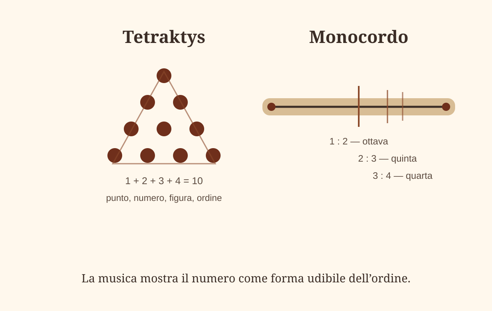

Incipit
Tra VII e V secolo a.C., il mondo greco pensa attraverso luoghi, corpi, riti, immagini e parole. I santuari di Eleusi, le città ioniche, Efeso, Samo, Crotone, Metaponto ed Elea formano una geografia viva: templi, porti, vie sacre, comunità, poemi, formule, statue, numeri.
In questo spazio il cosmo viene interrogato attraverso forme concrete: l’acqua, l’aria, l’indefinito, il numero, il fuoco, il fiume, la porta, la dea, la sfera. Ogni immagine apre una domanda: da dove vengono le cose? che cosa le tiene insieme? quale ritmo attraversa il mutamento? che rapporto esiste tra pensare, vedere ed essere?
Il percorso segue questa trama: dai misteri di Demetra, Dioniso e Orfeo alla Ionia di Mileto; dal numero pitagorico al fuoco di Eraclito; dal logos comune alla visione di Parmenide, dove il pensiero prende la forma di un viaggio verso la verità.


Rito, canto, visione
Il pensiero greco arcaico prende forma nei luoghi, nei riti, nei canti e nelle immagini. Un santuario è un ambiente costruito per trasformare chi entra. Un inno è parola ritmata, memoria, invocazione, presenza. Una formula incisa su una lamina d’oro è orientamento per l’anima.
Eleusi, Dioniso, Orfeo, le lamine auree e il papiro di Derveni appartengono a questo paesaggio. Mostrano una sapienza che attraversa mito, rito, morte, memoria e trasformazione.
A Eleusi, il mito di Demetra e Kore lega il ciclo della terra al destino umano. La discesa di Persefone nel mondo infero e il suo ritorno aprono una grammatica simbolica: perdita, ricerca, lutto, ritorno, fecondità, speranza. Il tempo è ritmo, scomparsa e riapparizione.
Eleusi, Dioniso, Orfeo: sapere e trasformazione
Il santuario di Eleusi custodisce una delle esperienze più intense del mondo greco. Kore scompare, Demetra la cerca, la terra si inaridisce, la figlia ritorna, la vita riprende. Il seme entra nel buio e riappare come germoglio. La figlia discende e risale. Il vivente attraversa la perdita e riceve una forma nuova.
Dioniso porta ebbrezza, danza, maschera, smembramento, rinascita. Con lui l’identità si apre, trabocca, si trasforma. Il corpo entra nel pensiero come ritmo, estasi, passaggio.
Orfeo porta il canto. La sua figura si muove tra vita e morte: chiama, discende, perde, ricorda. Nella costellazione orfica la parola è via, accompagnamento, orientamento dell’anima.
Approfondimento futuro
Orfeo: il canto e la discesa: mito, parola poetica, catabasi, memoria dell’anima e immagini antiche.
Efeso: Artemide e il corpo sacro della città
Efeso è la città di Eraclito e una città dominata da una grande immagine sacra: Artemide Efesina. Il suo tempio, l’Artemision, era uno dei luoghi più celebri del mondo antico. Qui il sacro prendeva forma in architettura, processione, statua, offerte, memoria cittadina.


Approfondimento futuro
Efeso: Artemide, il tempio e la città della memoria. Artemision, immagini di Artemide Efesina, ricostruzioni del tempio, Biblioteca di Celso, video e materiali visivi.
Mileto: acqua, apeiron, aria
Da Efeso il percorso si apre alla Ionia, e in particolare a Mileto, città di mare, di porti, di commerci, di contatti mediterranei.
Talete (ca. 624–546 a.C.) pensa l’acqua come principio vitale. Anassimandro (ca. 610–546 a.C.) introduce l’apeiron: l’indefinito, ciò che non ha forma chiusa, il fondo da cui le cose emergono e a cui ritornano. Anassimene (ca. 586–525 a.C.) pensa l’aria: respiro, invisibile presenza, vita che attraversa il corpo e il mondo.
Talete
ca. 624–546 a.C. Acqua, principio vitale, sapienza ionica.
Anassimandro
ca. 610–546 a.C. Apeiron, fondo indefinito, limite e apparizione.
Anassimene
ca. 586–525 a.C. Aria, respiro cosmico, trasformazione.
Mappa interattiva del libro di testo
Per localizzare Mileto, Efeso, Samo e la costa ionica dell’Asia Minore, usa la carta interattiva del manuale Sanoma sulla Grecia arcaica.
Nota iconografica. I ritratti dei filosofi arcaici sono spesso posteriori e convenzionali. Nel sito saranno usati come immagini della tradizione, accompagnati da una didascalia chiara.
Pitagora: numero, anima, armonia



La figura di Pitagora (ca. 570–495 a.C.) si colloca tra storia, scuola e leggenda. Le tradizioni antiche e tardo-antiche lo collegano a viaggi di formazione nel Mediterraneo orientale, in Egitto e, in alcune ricostruzioni, anche verso l’Oriente più lontano. Porfirio (ca. 234–305 d.C.) e Giamblico (ca. 245–325 d.C.) hanno contribuito a costruire l’immagine del sapiente iniziato.
La dottrina della metempsicosi è uno dei nuclei più profondi della tradizione pitagorica. Pitagora e il Buddha storico (ca. V secolo a.C.) appaiono come due condensazioni storiche di tradizioni molto più antiche: da una parte il Mediterraneo del numero, dell’armonia e della metempsicosi; dall’altra l’India del saṃsāra, del karma e della liberazione.
Approfondimenti futuri
Pitagora tra storia e leggenda sapienziale, I Versi aurei, Metempsicosi pitagorica, anima e reincarnazione, Pitagora e Buddha.
Eraclito: fuoco, logos, dormienti, fiume

«Di questo logos, che è sempre, gli uomini restano senza comprensione, sia prima di ascoltarlo sia dopo averlo ascoltato...»
Eraclito, fr. B1 — resa provvisoria da verificare su edizione affidabile«Unico e comune è il mondo per coloro che sono desti; ciascuno dei dormienti invece si volge a un mondo proprio.»
Eraclito, fr. B89«A chi entra negli stessi fiumi sopraggiungono acque sempre diverse.»
Eraclito, fr. B12«Questo cosmo, lo stesso per tutti, nessuno degli dèi né degli uomini lo fece; ma fu sempre, è e sarà fuoco semprevivente...»
Eraclito, fr. B30Aion: il fanciullo che gioca
«Aion è un fanciullo che gioca, muovendo le pedine: di un fanciullo è il regno.»
Eraclito, fr. B52Questa immagine avrà una lunga fortuna filosofica. Nietzsche (1844–1900) legge Eraclito come il grande pensatore del divenire innocente e del mondo come gioco.
Approfondimenti futuri
Eraclito: il fuoco, il logos e l’armonia nascosta, Chronos, Kairos, Aion, Nietzsche e i Greci.
Parmenide: carro, porte, dea, essere
Da Efeso il percorso si sposta in Magna Grecia, a Elea, dove il pensiero prende la forma di un poema. Parmenide (ca. 515–450 a.C.) apre la sua opera con un carro, cavalle, fanciulle divine, porte, la soglia tra Notte e Giorno, una dea che accoglie il viandante e gli rivela le vie del pensiero.
Parmenide (ca. 515–450 a.C.) porta il percorso verso una domanda radicale: che cosa resta, dietro il mutamento delle cose? L’Essere parmenideo può essere immaginato come il fondo stabile di tutto ciò che appare: una presenza compatta, senza fratture, che sostiene il mondo molteplice.
«L’una: che è e che non è possibile che non sia. È il sentiero della Persuasione, perché accompagna la Verità...»
Parmenide, fr. B2 — resa provvisoria da verificare su edizione affidabile

Parmenide può essere accostato, per risonanza filosofica, alle grandi dottrine della non-dualità. Nelle Upaniṣad antiche, in parte anteriori o contemporanee al mondo di Parmenide, compare la ricerca di una realtà ultima oltre la molteplicità dell’apparire: Ātman, Brahman, il fondo profondo dell’essere.
Approfondimenti futuri
Parmenide: il carro, la dea e la via dell’essere, Parmenide e le Upaniṣad, Advaita Vedānta e non-dualità.
Da sviluppare
Questa pagina è il nucleo principale del modulo. Gli schemi provvisori sono stati rimossi: restano immagini reali, fonti museali o Wikimedia, e una sola tavola grafica essenziale — tetraktys e monocordo — perché utile e non decorativa.
Approfondimenti da trasformare in pagine autonome
- Demetra, Kore e i Misteri eleusiniMito, rito, ciclo morte-ritorno-fecondità, Grande Rilievo Eleusino, Ninnion Tablet, iconografia antica e fortuna artistica.
- Dioniso: corpo, maschera, estasiOrfismo, Menadi, Baccanti, Osiride, tarantismo, Nietzsche, galleria finale e materiali video.
- Orfeo: canto e discesaCatabasi, Euridice, memoria, parola poetica, lamine auree, anima e orientamento dopo la morte.
- Efeso: Artemide, tempio e memoriaArtemide Efesina, Artemision, città, processione, immagini cultuali, Biblioteca di Celso e materiali visuali affidabili.
- Pitagora tra storia e leggenda sapienzialeSamo, Crotone, Metaponto, Porfirio, Giamblico, comunità pitagorica, silenzio, disciplina, numero e vita.
- Metempsicosi pitagorica, anima e reincarnazionePsiché, purificazione, molte vite, rapporto con orfismo, misteri, India, saṃsāra, karma e liberazione.
- Eraclito: fuoco, logos e armonia nascostaFrammenti scelti, B1, B12, B30, B52, B53, B89; mondo comune, dormienti, contrari, polemos e fuoco.
- Parmenide: carro, dea e via dell’essereIl poema come viaggio sapienziale: proemio, porte, dea, verità, opinione, essere.
Approfondimenti collegati
Questa pagina principale prepara una costellazione di approfondimenti autonomi, sul modello del modulo dedicato ai necromanteia greci.
- Demetra, Kore e i Misteri eleusini
Mito, rito, immagini antiche, Telesterion, iconografia del ratto e ricezioni moderne. - Dioniso: corpo, maschera, estasi
Orfismo, Menadi, Baccanti, Osiride, tarantismo, tragedia e fortuna artistica del mito. - Orfeo: canto e discesa
Catabasi, memoria, poesia, anima. - Efeso: Artemide, tempio e memoria
Artemision, dea, città, ricostruzioni. - Pitagora tra storia e leggenda
Porfirio, Giamblico, Versi aurei, viaggi. - Metempsicosi pitagorica
Psiché, purificazione, anima, vite molteplici. - Nietzsche e i Greci
Dioniso, Apollo, tragedia, Eraclito, Aion. - Chronos, Kairos, Aion
Le forme greche del tempo. - Parmenide e la non-dualità
Essere, Upaniṣad, Ātman, Brahman.
Laboratori e domande finali
Laboratori
- Disegnare il logos dei contrari: costruire una composizione fondata su luce/buio, secco/umido, alto/basso, quiete/movimento.
- Tetraktys e armonia: creare una tavola grafica su punto, linea, triangolo, numero e suono.
- Le due vie di Parmenide: rappresentare verità e opinione con porta, luce, notte, strada e voce.
Domande
- Che cosa cambia quando il sapere prende forma in rito, immagine, numero e parola filosofica?
- Il numero misura soltanto o rivela una forma invisibile?
- Che cosa significa ascoltare un logos comune?
- Una forma visibile può pensare?
- Che rapporto c’è tra suono, misura, corpo e cosmo?